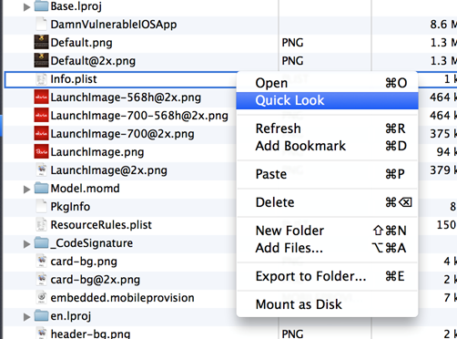
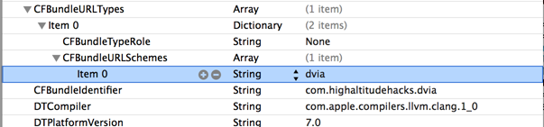
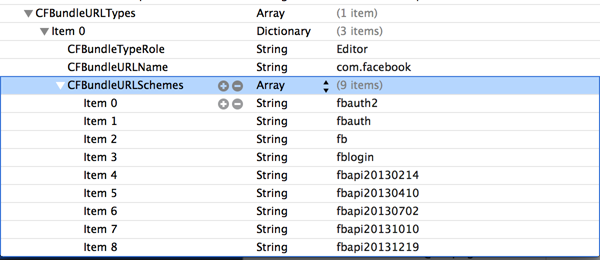
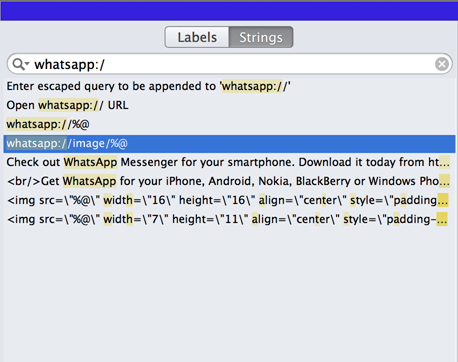

In this article, we will look at how we can use a feature in iOS named url schemes to exploit an application. URL schemes are used by applications to communicate with each other. Every application can register for a particular url scheme. For e.g, the Damn Vulnerable iOS application registers for the url scheme dvia. This means that any url starting with dvia:// protocol will open up the dvia application. Depending on the parameters and the endpoint in this url, the dvia application can decide what to do it. Another example is the phone application in iOS. It registers for the url scheme tel and a url like tel://1-393-222-2222 will invoke the phone application and call a number. The problem arises when the url is not validated or the user is not prompted for confirmation in the application before making a particular decision.
The first step is to find the actual url scheme an application is registered to. This information can be found by looking at the info.plist file in the application sandbox folder using any file explorer utility like iExplorer.

In this case, we can see that the url scheme for the DVIA application is dvia.

An application can register for more than 1 url scheme. For e.g, in the image below, we can see that the Facebook iOS application registers for about 8 url schemes.

The next step is to find the actual url structure the application is looking for in order to perform some action. There are a couple of ways of doing it and these steps may or may not work in all the cases. One of the very simple ways is to look for any string in the application starting with that url scheme. This can be done using the strings commands or a utility like Hopper. Note that you will first have to decrypt the application binary using clutch in case the application was downloaded from the App store as all app store binaries are encrypted.So let me copy the decrypted Whatsapp app binary to desktop and open it using Hopper. I know that it’s url scheme is whatsapp, so let me search for the string whatsapp://

This can give you some information about the endpoints the application is expecting. For e.g, over here you can open a url like whatsapp://image/xyz to see how the application reacts to it. By supplying a url, i mean just going to safari and typing in the url and see how the whatsapp application reacts to it.
One of the other ways to find out how the url scheme is being handled is to reverse engineer a particular method in the App delegate file. If you are familiar with a bit of iOS development, you will also know that the method that is called to handle an incoming url is
– (BOOL)application:(UIApplication *)application openURL:(NSURL *)url sourceApplication:(NSString *)sourceApplication annotation:(id)annotation
in the App Delegate class.
So it’s a good idea to search for this method’s implementation using Hopper and try to look at its Pseudo code to find out what is happening.
In order to prevent vulnerabilities related to url schemes, proper validation should also be performed inside this method. For e.g, the sourceApplication parameter can be used to find out the application calling this url scheme. You can have a whitelist of the applications that you want to call this url scheme and compare it against this source application. If this calling application is not in the list of whitelisted applications, you should not perform any action. Another important validation step could be to prompt an alert to the user and ask him to confirm the action. This will mostly protect against all url scheme related issues.
One of the very famous vulnerabilities related to URL schemes was found in the Skype iOS application. The skype application didn’t perform any validation when a url like skype://14085555555?cal was called and made the call to the appropriate number without validation. More details about this vulnerability can be found here.
In case you are wondering how the attacker will force the user to call that particular url with the url scheme for the application, it can be done in many ways. The attacker can lure the user into viewing a webpage that can contain some javascript like
<script>document.location=’tel://1123456789′<script>
or iframe like
<iframe src=”tel://1123456789″></iframe>
So as we can see, if an application doesn’t validate an incoming url properly, it might lead to a security vulnerability. If you have any questions, please ask them in the comments section below and i will get back to you.